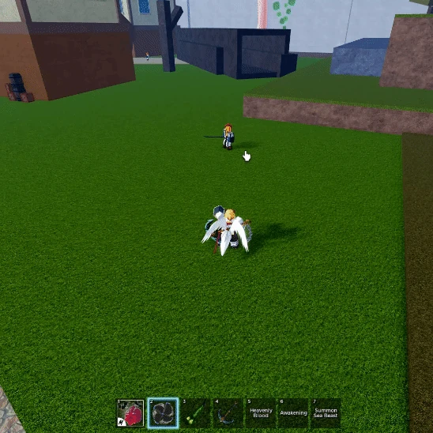
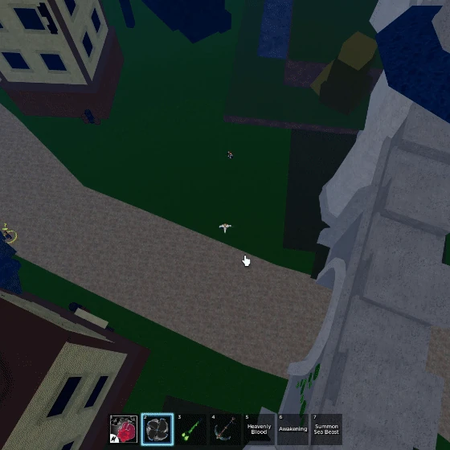
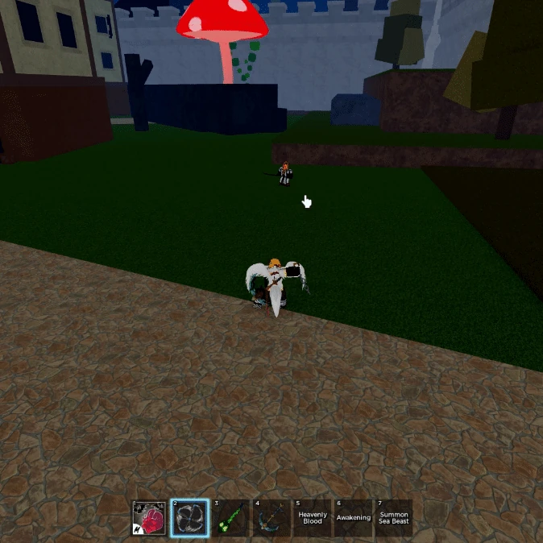

HOME
HOME

The user spins their arms and makes many wind slashes that do damage to anyone in front of them. It can be held for more damage, and stuns the enemy in place.
The user spins and unleashes a barrage of air slashes, before unleashing a stronger slash that slightly knocks their opponent back. This move is very similar to Triple Katana Z move.
The user spins and unleashes a barrage of air slashes, before unleashing a stronger slash that slightly knocks their opponent back. This move is very similar to Triple Katana Z move.
The user spins their hands at a rapid rate to start flying toward their cursor at a slow pace.